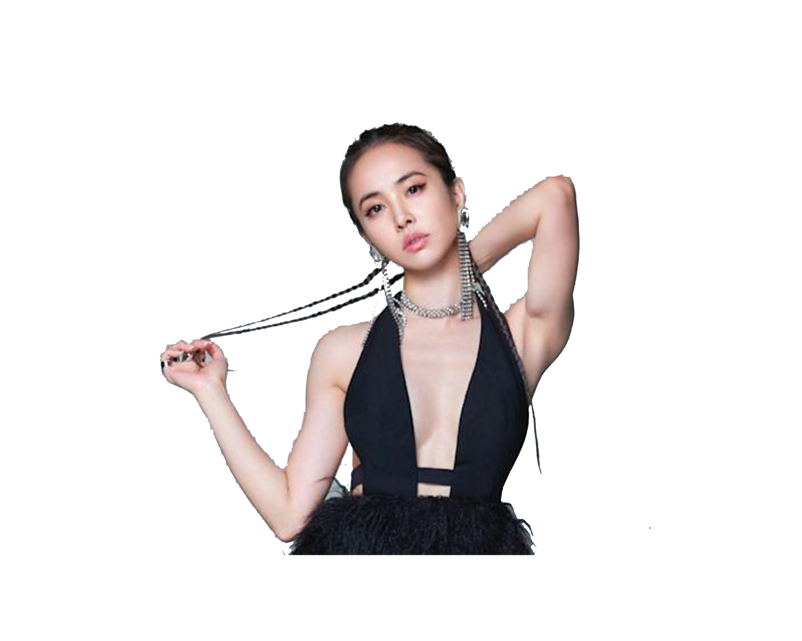

Jolin Tsai is a singer, songwriter, and actress. Referred to as the "Queen of C-Pop", she is considered one of the most influential people in Chinese popular culture. She is known for her continual reinvention and versatility in music style and visual image, and she has achieved great reputation and popularity in the Chinese-speaking world.

Faye Wong is a Hong Kong singer-songwriter and actress, often referred to as the "Diva of Asia". Since 1994, she has recorded mostly in her native Mandarin. In 2000, she was recognised by Guinness World Records as the Best Selling Canto-Pop Female.